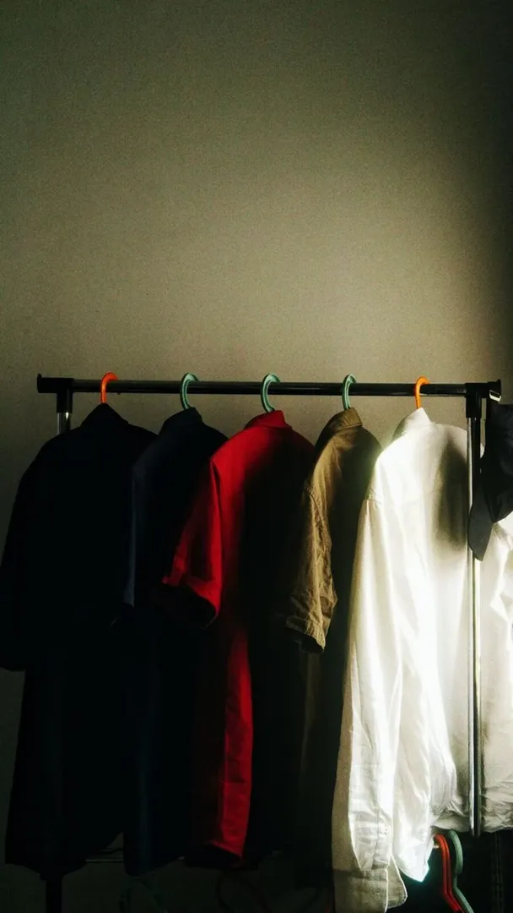

About
REWORN started with a simple irritation: good clothes were being sold badly. A Ralph Lauren linen shirt and a fast-fashion polo end up in the same pile, shot on the same bed, described with the same three words.
The pieces here were picked one at a time. Some are current-season branded stock. Some are archive — a 1990s Shanghai factory harrington, a Tokyo-made jacket with a red quilted lining nobody sees until you open it.
Product Health. Every listing carries a score. 100 means original, unworn-looking, no flaws. Anything below is explained in plain language — a snag, a thread pull, honest age. Nothing is hidden and nothing is edited out of the photographs.
Before it ships. Steamed, not ironed. Lint-rolled. Buttons and zips checked. Folded on tissue, not stuffed.
After it's yours. Cold wash, mild detergent, line dry in shade. The vintage outerwear prefers a brush and air over a machine. Wear it, don't preserve it.

Twenty pieces, nineteen brands, ₹499 to ₹2,199. When one goes, that is the end of it — there is no size run and no second colourway. That isn't scarcity marketing. It's just what second-hand means.